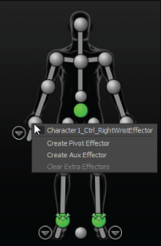
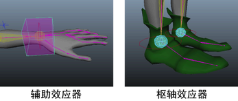
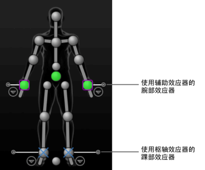
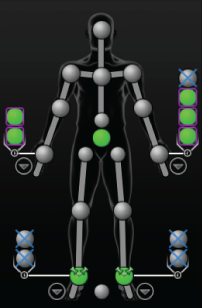
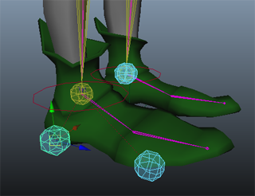

可以将辅助和枢轴效应器添加到角色控制装备，以提供其他级别的 IK 控制柄。请参见控制装备、效应器和枢轴。
若要添加辅助或枢轴效应器
- 在“控制”(Controls)选项卡的“角色”(Character)表示中，在 IK 控制装备效应器单元上单击鼠标右键。

- 在显示的菜单中，选择“创建辅助效应器”(Create Aux Effector)或“创建枢轴效应器”(Create Pivot Effector)。
辅助或枢轴效应器位于相同的位置，并作为相应的 IK 效应器旋转。
在“控制”(Controls)选项卡中，效应器单元将更新，以表示效应器现在具有的辅助或枢轴效应器。

若要选择辅助效应器或枢轴效应器
- 请执行下列任一操作：
- 在“角色”(Character)表示中单击相应的单元，以选择当前辅助效应器
 或枢轴效应器
或枢轴效应器  。
。
（创建辅助或枢轴效应器时，单元将更新，以指示当前对象。当前效应器是最后创建的或最后选定的）。
- 如果每个单元中有多个效应器，单击 + 图标以展开单元，然后选择要在相应单元中设定为“当前”的效应器。

然后可以收拢单元视图并继续通过选择该单元来选择当前辅助效应器或枢轴效应器。
- 在“角色”(Character)表示中的相应单元上单击鼠标右键，然后从显示的菜单中按名称选择辅助效应器或枢轴。
- 在“角色”(Character)表示中单击相应的单元，以选择当前辅助效应器
若要调整枢轴效应器在场景中的位置
- 选择要调整的枢轴效应器，然后选择“移动”工具
 。
。
移动显示在枢轴效应器上的操纵器。
- 按住 D 并拖动以定位枢轴效应器。
提示： 您还可以按住 Insert 键并拖动以从装备中单独移动枢轴效应器。
通过 D 和 Insert 热键，可以从装备中单独移动枢轴效应器。在不按住 D 或 Insert 键的情况下移动枢轴效应器，可以调整角色的位置。
提示： 如果创建多个枢轴效应器并想要动画基于不同时间点上的不同枢轴的角色，例如使脚部围绕不同的点旋转作为角色走了一步，关键帧枢轴效应器到达值为 1.00（完全）作为要在该时间点围绕其旋转的枢轴。
要调整辅助效应器在场景中的位置
- 在 HumanIK 窗口中，单击
 >“编辑控制装备”(Edit Control Rig)，并禁用“对齐/同步控制装备”(Align/Synchronize Control Rig)。
>“编辑控制装备”(Edit Control Rig)，并禁用“对齐/同步控制装备”(Align/Synchronize Control Rig)。
- 选择要调整的辅助效应器，然后选择“移动”工具 。
将在场景的辅助效应器上显示移动操纵器。
- 拖动以定位效应器。
- 在“控制”(Controls)选项卡中，调整“IK 融合平移”(IK Blend T)和“IK 融合旋转”(IK Blend R)滑块。
“对齐/同步控制装备”(Align/Synchronize Control Rig)禁用后，您可以预览辅助效应器和装备之间达到的操纵效果。
若要移除辅助或枢轴效应器
- 请执行下列任一操作：
- 若要移除单个辅助效应器和枢轴，请在场景中将其选中，然后按 Delete 键。
- 若要删除效应器的所有辅助和枢轴效应器，在“角色(Character)表示中的相应 IK 单元上单击鼠标右键，然后从显示的菜单中选择“清除附加效应器”(Clear Extra Effectors)。